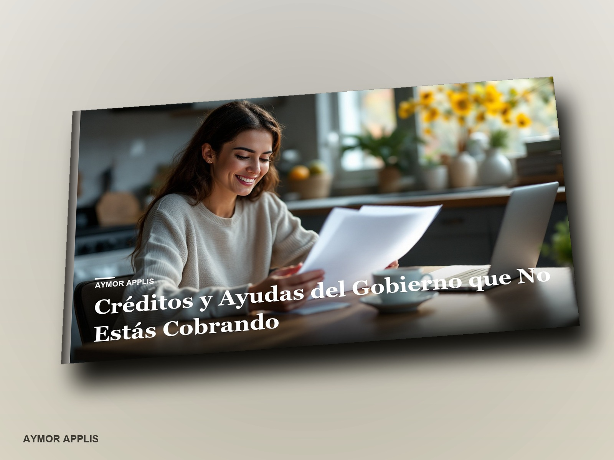
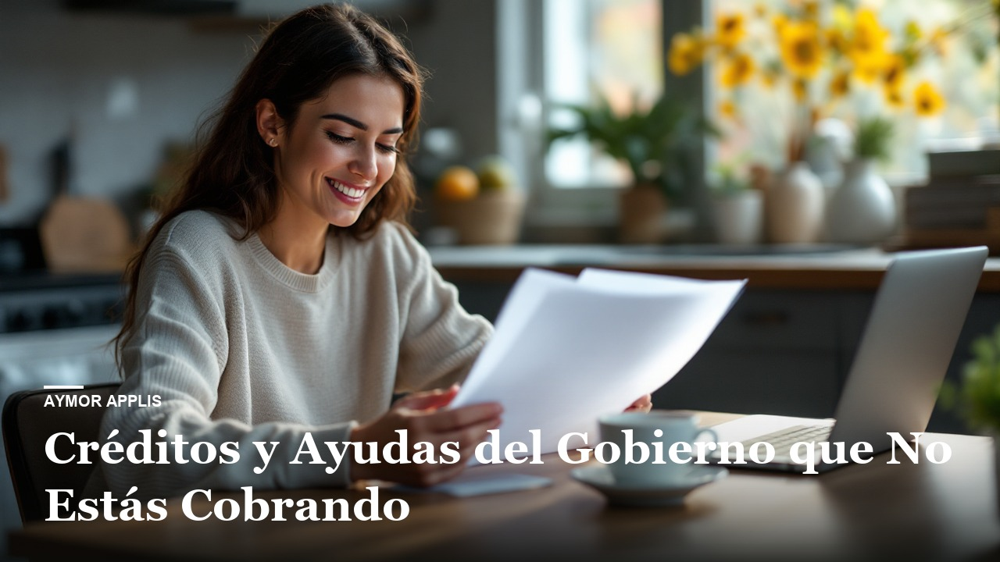

L'Argent que Vous Laissez sur la Table
Crédits d'impôt et aides gouvernementales que vous ne réclamez pas : solidarité, personne aidante, allocations pour enfants, frais de scolarité, travailleurs, handicap — qui y a droit, combien, comment les demander au fédéral et au Québec, et comment récupérer jusqu'à dix ans d'oublis.
Questa scheda è in francese: non l'abbiamo ancora scritta in italiano. Il libro è in inglese, spagnolo, francese.
Prima di pagare ↓Cosa c'è dentro
- Comprendre le terrain avant de réclamer
- Les versements liés au revenu, pour presque tout le monde
- Les familles : deux allocations, un crédit pour la garde, et les pièges de l'arrivée
- Les proches aidants : le crédit le plus sous-utilisé du Québec
- Handicap : un crédit qui ouvre beaucoup d'autres portes
- Les étudiants : des crédits qui valent de l'argent maintenant, pas seulement plus tard
Per chi è
Pour les salariés, étudiants, parents, proches aidants et nouveaux arrivants au Québec ou au Canada qui laissent peut-être des crédits non réclamés. C'est une carte, pas une déclaration personnalisée : le guide dit ce qui existe et où le demander, il ne calcule pas votre cas.
Prima di pagare
27,99 USD Un solo pagamento. Non si rinnova.
Se compri per la tua attività, le leggi di tutela del consumatore non si applicano. Spuntala solo se è vero.
AcquistaSpunta la casella per poter pagare.
Il pulsante si accende quando la direzione aprirà il negozio.